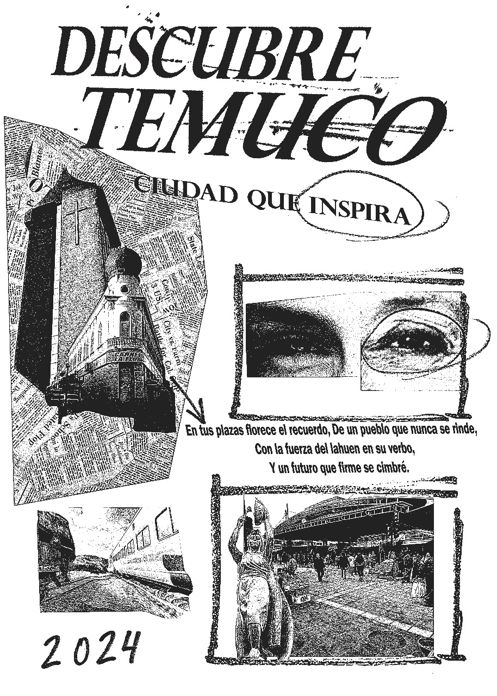

Sobre el proyecto
Este trabajo fue realizado como parte de un concurso dedicado a la promoción de la ciudad de Temuco. El objetivo era diseñar un afiche que incentivara a las personas a visitar la ciudad, destacando sus principales atractivos e identidad cultural. Se buscó resaltar los elementos más representativos de Temuco para captar la atención del público y fomentar el turismo en la región. Con un concepto de locura.
Cliente
Municipalidad de Temuco
Tiempo de desarrollo
5 días
Si necesitas algo como esto, no dudes en hablarme.
ContáctameTecnologías utilizadas
Revisa este proyecto en
